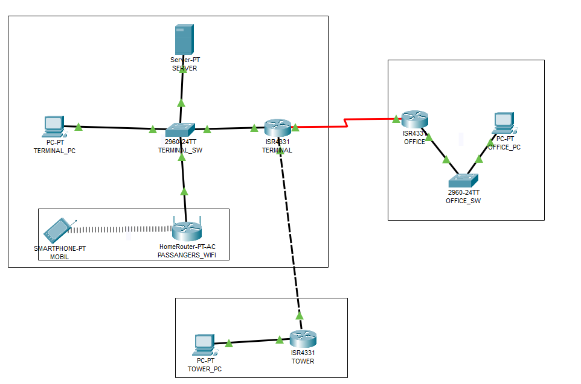
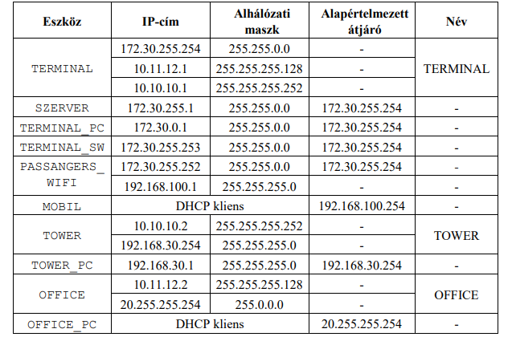
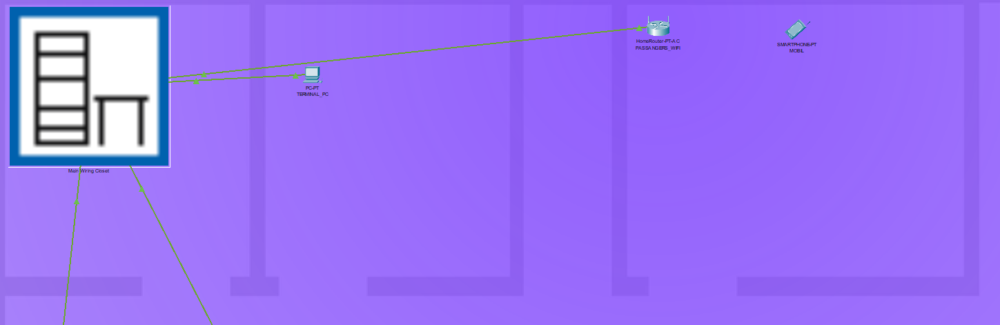
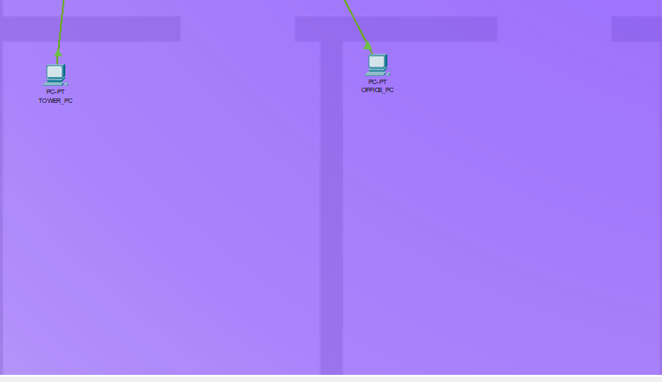

Repülőtér
Hálózat leírása
A London-Heathrow-i repülőtér vagy csak röviden Heathrow Nyugat-Londonban, Hillingdon kerületben fekszik. Az Egyesült Királyság elsődleges és legfontosabb repülőtere, a Londont és környékét kiszolgáló hat nemzetközi repülőtér közül pedig a legnagyobb (a következő Gatwick, majd Stansted, Luton, London-City és Southend).
Az üzemeltető cég korszerűsíteni szeretné a repülőtér informatikai infrastruktúráját.
Erre vonatkozólag már meg is születtek a tervek.
A reptér rendelkezik egy központi épülettel (TERMINAL_NET), ahol az utasok várakoznak az indulásra.
Itt kapott helyet a hálózat adminisztrátora (TERMINAL_PC), valamint a szerverek(SZERVER).
A gépek fel- és leszállásának irányítását az irányítótoronyból (TOWER_NET) végzik.
A jegyirodák (OFFICE_NET), melyekből a repülőtér szervereit el kell tudni érni.
Topológia

Hálozatban a címzések

Fizikai Réteg

